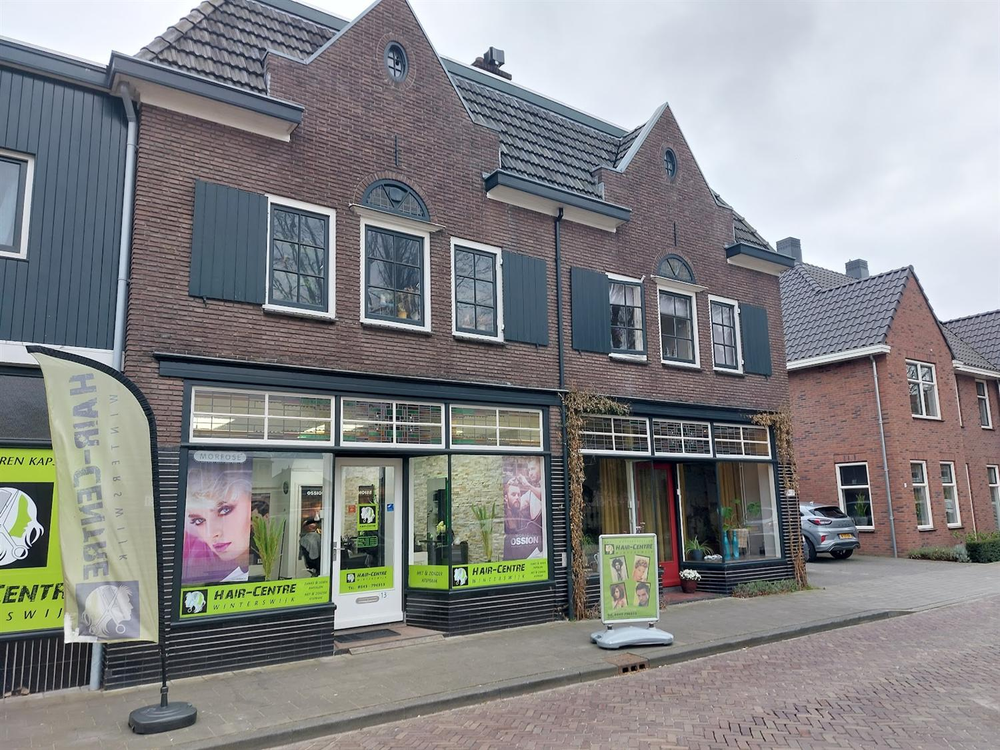
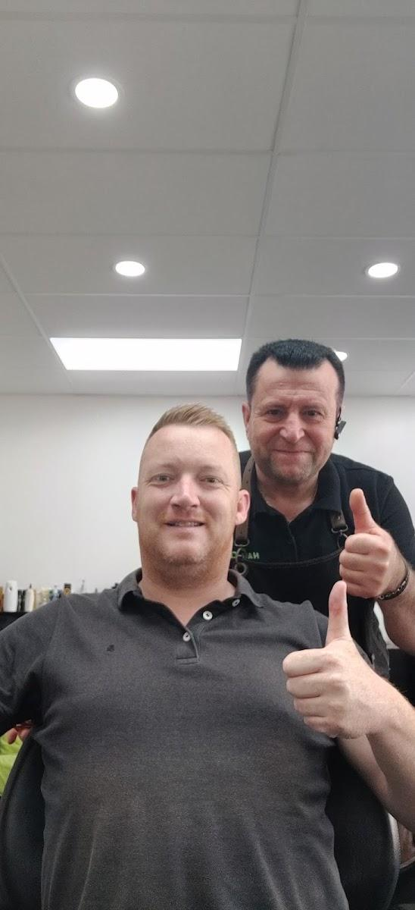
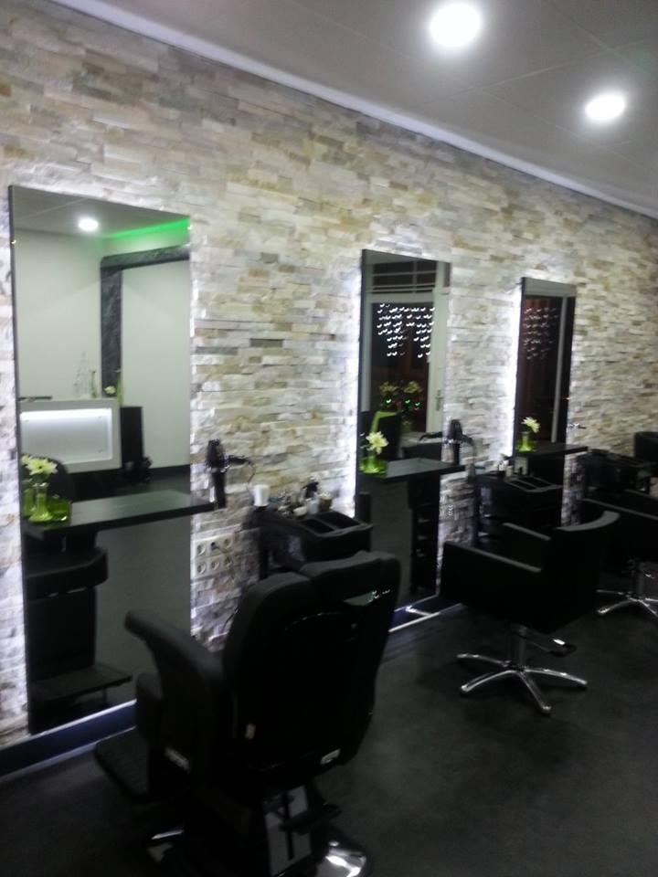

★★★★★
Een geweldige kapper. Het resultaat was echt prachtig en de prijs was heel erg goed voor het werk dat hij gedaan heeft.
Ibrahim AmousiDames, heren en kinderen. Loop binnen wanneer het jou uitkomt, of bel even vooruit.

Je hoeft niets vooruit te regelen. Kom langs wanneer het uitkomt, dan kijken we wanneer je aan de beurt bent.
Knippen, kleuren, baard bijwerken. Voor het hele gezin onder hetzelfde dak, in het centrum van Winterswijk.
Werk je tot vijf uur? Op vrijdagavond zit je hier nog gewoon in de stoel. Ook zaterdag tot 17:00 open.
Kies hieronder wat u komt doen en wanneer het u schikt. Wilt u liever niets regelen, loop dan gewoon binnen. Beide kan bij ons.

Kinderen knippen is iets anders dan volwassenen knippen. Soms gaat het in een keer goed en soms duurt het wat langer. Dat is prima. Er staat niemand op de klok, en we sturen niemand met een half kapsel de deur uit.
“Ik kom al vier jaar met veel plezier bij deze kapper, altijd samen met mijn zoontje van 4. Wat ik enorm waardeer, is de manier waarop er met kinderen wordt omgegaan.” Ezra Pietersz, via Google
116 reviews op Google, gemiddeld 4,9
Een geweldige kapper. Het resultaat was echt prachtig en de prijs was heel erg goed voor het werk dat hij gedaan heeft.
Ibrahim AmousiSinds de opening al klant en altijd tevreden. Super vriendelijke kapper en neemt alle tijd.
IanVriendelijke kapper met oog voor detail en aandacht voor de klant.
Via Google| Maandag | 11:00 - 18:00 |
|---|---|
| Dinsdag | 09:00 - 18:00 |
| Woensdag | 09:00 - 18:00 |
| Donderdag | 09:00 - 18:00 |
| Vrijdag | 09:00 - 21:00 |
| Zaterdag | 09:00 - 17:00 |
| Zondag | Gesloten |

Bel even, of loop gewoon binnen aan de Wilhelminastraat. Wij zorgen dat u goed geknipt weer buiten staat.